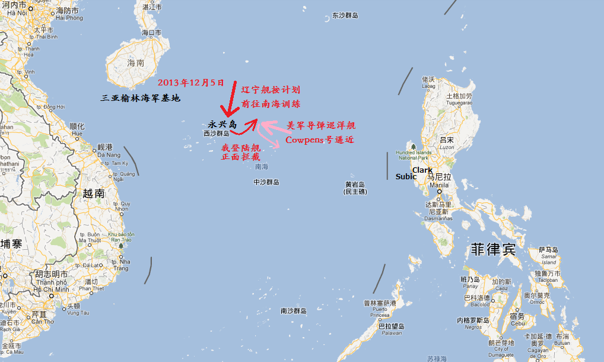

返回主页
南海中美博弈（海空对峙）

2013年12月5日，美军巡洋舰“考彭斯”号（导弹巡洋舰Cowpens）在南海监视“辽宁”舰时，被中国军舰逼开。
开平碉楼和土客械斗
2009年6月的“麦凯恩号驱逐舰撞船事件”中，美海军“麦凯恩”号导弹驱逐舰的声纳与中国潜艇发生碰撞。
2009年3月的“无瑕号事件”中，“无瑕”号水声测量船试图获取中国潜艇的声纹资讯或对南海水文情况进行勘测。
２００９年３月，美国间谍船“无瑕号”在中国的海南岛南部，约７５海里的海域，带着１８００米长的拖曳线列阵声纳，收集中国的各种情报。中国出动渔政海事舰艇等劝其停止损害中国安全的行动，其以高压水龙枪相击。３月９日，美国国务院向中国抗议，指责中国骚扰“无瑕号”在国际海域执行例行任务。中国外交部立即回应，根据《联合国海洋法公约》，主权国家邻海２００海里的区域，是该国的专属经济区。任何国家的船只在专属经济区海域，只能无害通过。“无瑕号”违犯了这个公约。同日，中国外交部长杨洁篪开始访问美国，会晤国务卿希拉里和总统奥巴马，就这个问题进行了磋商，双方达成共识。在随后的新闻发布会上，国务卿希拉里表示需要降低两国间的这种紧张状态，加强对话，避免类似的事情决再次发生。然而，第二天，美国参谋长联席会议主席麦克马伦公开宣称，美国有权进入这片海域，中国无权干涉其行动自由。美国军方派遣“钟云”号导弹驱逐舰为“无瑕号”护航，声称必要时，击沉中国船只。
2001年的“南海撞机”事件中，撞毁中方歼8的美军EP3C侦察机正执行对解放军位于海南的军事通讯监听任务。
Never believe anything in politics until it has been officially denied. Otto von Bismarck
《经济学人》的钓鱼岛
莱特湾海战（Battle of Leyte Gulf）作战地图（1）
莱特湾海战（Battle of Leyte Gulf）作战地图（2）
东风-41覆盖美国全境，美军反导拦截困难
version:1.0; jobnet@188.com © retter2012.com